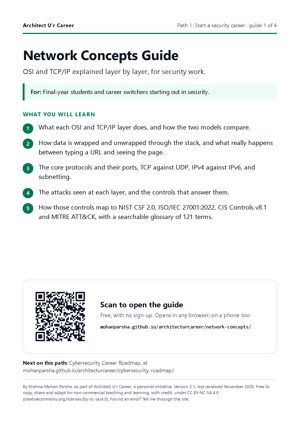
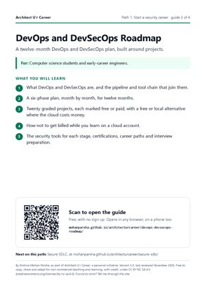
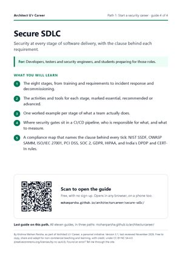
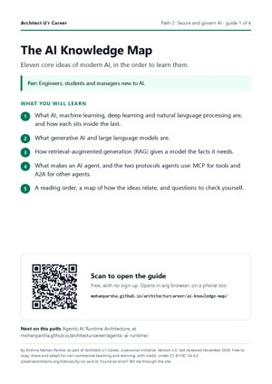
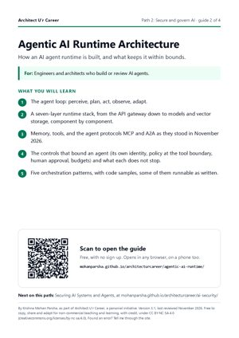
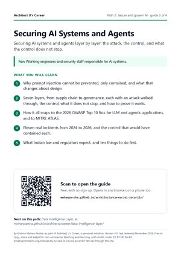
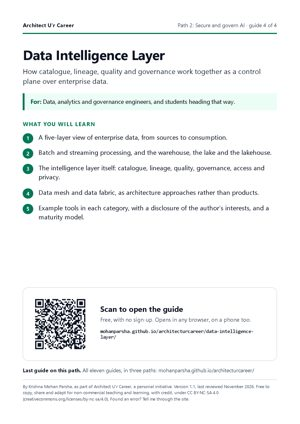
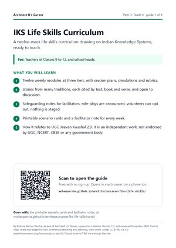
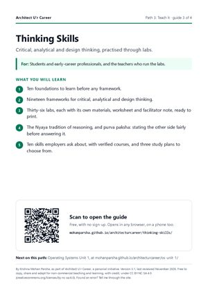
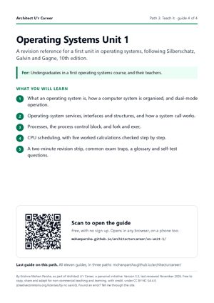

One-page summaries, to print or share
One A4 page for each guide: what it is, who it is for, five things it teaches, and a QR code that opens it. Print one for a notice board, or send the image to a class group. You may copy and share them freely for teaching and learning.
Path 1: Start a security career
-

Network Concepts Guide
OSI and TCP/IP explained layer by layer, for security work.
-
Cybersecurity Career Roadmap
A career roadmap for security in India: the domains, an 18-month plan, and what it costs.
-

DevOps and DevSecOps Roadmap
A twelve-month DevOps and DevSecOps plan, built around projects.
-

Secure SDLC
Security at every stage of software delivery, with the clause behind each requirement.


Path 2: Secure and govern AI
-

The AI Knowledge Map
Eleven core ideas of modern AI, in the order to learn them.
-

Agentic AI Runtime Architecture
How an AI agent runtime is built, and what keeps it within bounds.
-

Securing AI Systems and Agents
Securing AI systems and agents layer by layer: the attack, the control, and what the control does not stop.
-

Data Intelligence Layer
How catalogue, lineage, quality and governance work together as a control plane over enterprise data.


Path 3: Teach it
-

IKS Life Skills Curriculum
A twelve-week life skills curriculum drawing on Indian Knowledge Systems, ready to teach.
-

Thinking Skills
Critical, analytical and design thinking, practised through labs.
-

Operating Systems Unit 1
A revision reference for a first unit in operating systems, following Silberschatz, Galvin and Gagne, 10th edition.